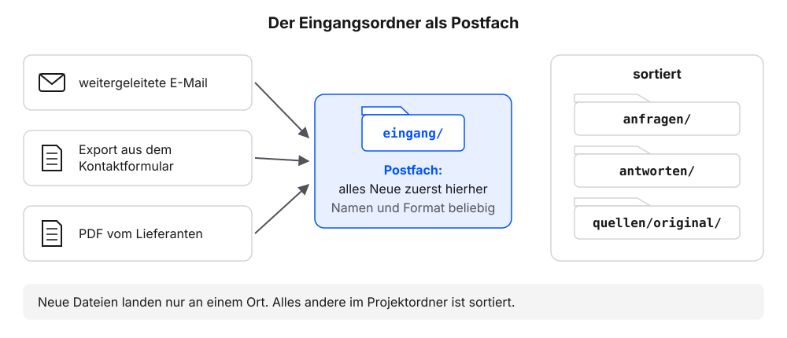
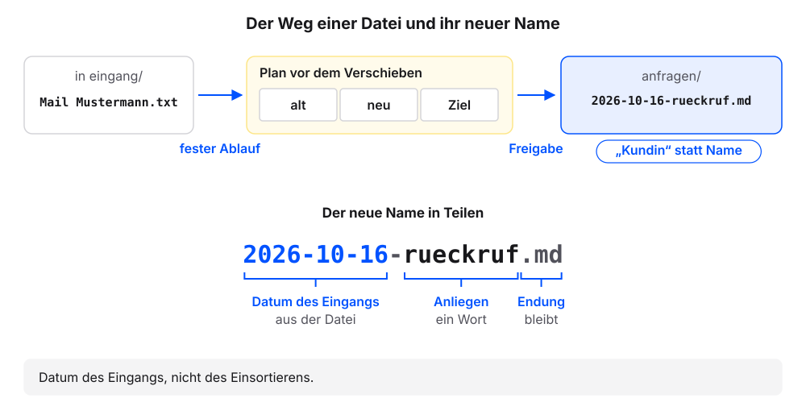
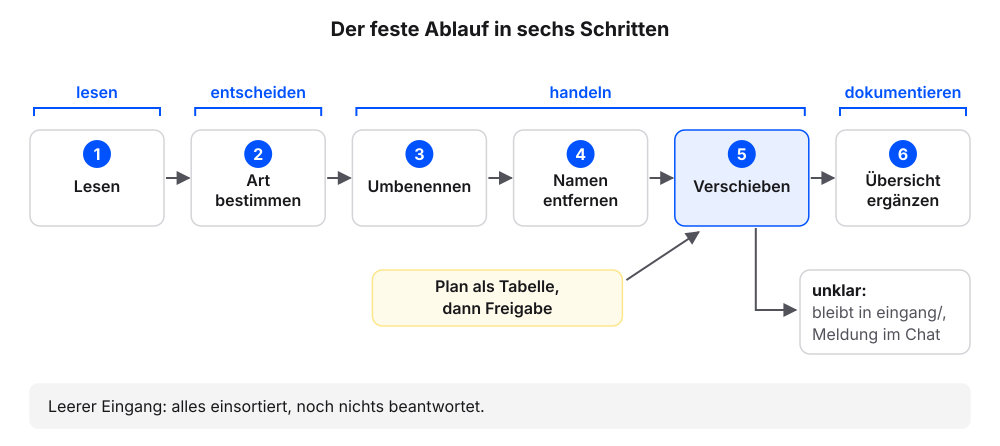

9 Laufend neue Dateien
Ein Projektordner bleibt nur so lange brauchbar, wie neue Unterlagen denselben Weg nehmen. Im Alltag kommen Anfragen als weitergeleitete E-Mail, als Export aus dem Kontaktformular oder als PDF eines Lieferanten. Wir richten mit dem eigenen Agenten einen Ordner ein, in dem alles Neue landet, und leeren ihn mit einem Auftrag, der immer gleich lautet. Die Erklärung folgt jeweils am eigenen Ergebnis.
Jeder Schritt hat denselben Aufbau: ein Auftrag zum Kopieren, ein Kasten „So sieht es im Beispielfall aus“, eine kurze Erklärung und ein Abschnitt „Wenn es anders aussieht“.
Voraussetzung: Der eigene Projektordner ist in der App des Agenten gewählt. AGENTS.md enthält die Grundregeln 1 bis 6 und die Projektregeln. UEBERSICHT.md und der Ordner quellen/ liegen im Ordner (Stand nach dem Kapitel Excel-Tabellen als Quelle).
Wer echte Eingänge hat, etwa E-Mails als Text oder Formularexporte, kann zwei davon nutzen. Dazu im Finder (Mac) oder Explorer (Windows) im Projektordner den Ordner eingang anlegen, die zwei Dateien hineinkopieren und in den Kopien alle Personendaten entfernen. Die Schritte 3 und 4 entfallen dann.
9.1 Schritt 1: Den Eingang anlegen
Diese Frage senden:
Kannst du Dateien innerhalb dieses Ordners umbenennen und verschieben? Fragst du vorher, oder muss ich das in AGENTS.md festlegen? Nur antworten, nichts ändern.Prüfen: Der Agent sagt, ob er umbenennen und verschieben kann und ob er vorher fragt. Fragt er nicht von selbst, verlangt der Auftrag in Schritt 2 einen Plan vor dem Verschieben.
Diesen Auftrag senden:
Lege den Ordner eingang an und darin zwei Beispieldateien, die zu meinem Vorhaben laut README.md passen, mit unordentlichen Dateinamen, etwa mit Leerzeichen oder ohne Datum. Eine Datei enthält einen erfundenen Personennamen im Text, zum Beispiel Erika Mustermann.Im Beispielfall diesen Auftrag senden:
Lege den Ordner eingang an und darin zwei Beispielanfragen mit unordentlichen Dateinamen, etwa mit Leerzeichen oder ohne Datum. Eine Anfrage enthält einen erfundenen Personennamen im Text, zum Beispiel Erika Mustermann.Das Anlegen freigeben, wenn der Agent fragt.
Diese Frage senden:
Liste die Dateien in eingang/ auf. Zeig mir dann den Inhalt beider Dateien mit allen Zeichen.Prüfen: Die Liste nennt zwei Dateien. Bei Testdateien nennt eine davon im Text einen Personennamen.
9.1.1 So sieht es im Beispielfall aus
Unsere Namen weichen ab, die Prüfpunkte gelten.
Ein mögliches Ergebnis. Die Antwort auf die erste Frage ist je Werkzeug verschieden. Dateinamen und Inhalte wählt der Agent selbst. Entscheidend sind unordentliche Namen und ein Personenname im Text.
9.1.2 Was gerade passiert ist
Der Agent hat zwei Dateien angelegt, die nach keiner Regel benannt sind. Das ist Absicht: So sieht neues Material aus, bevor es sortiert ist. Legen wir solche Dateien einzeln von Hand ab, wächst die Unordnung mit jeder Woche.
Der Eingangsordner heißt bei uns eingang/. Er ist der einzige Ort im Projektordner, an dem neue Dateien landen, egal in welchem Format und mit welchem Namen. Alles andere im Ordner ist sortiert. Der Eingangsordner entspricht dem Postfach eines neuen Mitarbeiters: Alles, was für ihn hereinkommt, landet zuerst dort. Die Trennung hat zwei Vorteile. Wir müssen beim Ablegen nicht nachdenken: Alles Neue kommt zuerst nach eingang/ (Beispielfall: eine weitergeleitete E-Mail und ein Formularexport). Und der Zustand des Ordners ist auf einen Blick erkennbar.

- Der Agent lehnt den erfundenen Namen ab und verweist auf Grundregel 3: „Grundregel 3 gilt für Ergebnisse. Diese Testdatei soll einen eingehenden Text nachbilden, der Name ist erfunden.“
- Die Dateien haben schon ordentliche Namen: „Benenne eine der beiden Dateien in Mail Mustermann.txt um.“
- Kein Personenname im Text: „Ergänze in einer der beiden Dateien den Namen Erika Mustermann als Absenderin.“
- Der Agent sagt, er kann nicht umbenennen oder verschieben: Er schreibt die Datei dann unter dem neuen Namen neu. Nach Schritt 2 prüfen, ob die alte Datei aus
eingang/verschwunden ist.
9.2 Schritt 2: Der feste Ablauf
Voraussetzung: In eingang/ liegen die zwei Dateien aus Schritt 1. Der Abschnitt Material der README.md nennt die Ordner für die Arten von Material.
Den festen Ablauf senden:
Sortiere alle Dateien in eingang/ ein: 1. Lies jede Datei. 2. Bestimme die Art: eine Art aus dem Abschnitt Material der README.md, Quelle oder sonstiges. 3. Benenne um nach JJJJ-MM-TT-anliegen.md mit dem Datum aus der Datei, sonst heute. PDF und andere Dateien, die kein Text sind, behalten ihre Endung. 4. Entferne Personennamen und ersetze sie durch Rollen wie „Kundin“ oder „Kunde“. 5. Verschiebe in den Ordner, den README.md für diese Art nennt, Quellen nach quellen/original/; unklare Dateien bleiben in eingang/ und werden mir gemeldet. 6. Ergänze UEBERSICHT.md. Zeige mir den Plan als Tabelle (alt, neu, Ziel), bevor du verschiebst.Prüfen: Der Plan nennt für jede Datei den alten Namen, den neuen Namen und den Zielordner.
Den Plan freigeben.
Diese Frage senden:
Liste die Dateien in eingang/ und in den Zielordnern aus dem Plan auf. Zeig mir die zwei neuen Dateien mit allen Zeichen und die neuen Zeilen in UEBERSICHT.md.Prüfen: Die Liste nennt für
eingang/keine Datei. Die Zielordner haben zusammen zwei Dateien mehr als vorher (Beispielfall:anfragen/).Prüfen: In keiner neuen Datei steht ein Personenname.
UEBERSICHT.mdhat zwei neue Zeilen.
9.2.1 So sieht es im Beispielfall aus
Unsere Namen weichen ab, die Prüfpunkte gelten.
Entscheidend: Der Plan kommt vor dem Verschieben, eingang/ ist danach leer, die neuen Dateien folgen dem Muster JJJJ-MM-TT-anliegen.md, und statt des Namens steht eine Rolle wie „Kundin“. Den Zielordner anfragen/ hat der Agent im Beispielfall aus der README.md gelesen.
9.2.2 Was gerade passiert ist
Ein einziger Auftrag hat beide Dateien gelesen, umbenannt, von Namen befreit, einsortiert und in die Übersicht eingetragen.
Ein fester Ablauf ist ein Auftrag, der immer gleich lautet, egal was im Eingang liegt. Er ist die Morgenroutine für dieses Postfach. Der Agent schaut aber nicht von selbst hinein: Wir senden ihm den Ablauf. Den Zielordner liest er aus dem Abschnitt Material der README.md. Deshalb nennt der Auftrag keinen festen Ordnernamen und passt zu jedem Projektordner. Im Beispielfall wurde so Mail Mustermann.txt zu anfragen/2026-10-16-rueckruf.md, und im Text steht „Kundin“ statt des Namens (Grundregel 3 unserer AGENTS.md: keine Personennamen in neuen Dateien).
Die neuen Namen folgen der Namenskonvention aus dem Kapitel Erstes Material und neue Sitzung: JJJJ-MM-TT-anliegen.md. Bei uns zeigt die Spalte „neu“ im Plan die Namen. Das Datum steht vorne, in der Reihenfolge Jahr, Monat, Tag. So sortiert jedes Dateiprogramm die Anfragen chronologisch. Danach folgt das Anliegen in einem oder zwei Wörtern, klein geschrieben und mit Bindestrichen verbunden. Das Datum ist der Tag des Eingangs, also das Datum aus der Datei selbst, nicht der Tag des Einsortierens. Sortieren wir am Montag drei Anfragen vom Freitag ein, tragen alle drei das Datum vom Freitag. Nur wenn die Datei kein Datum enthält, nimmt der Agent den heutigen Tag. PDF-Dateien und andere Dateien, die kein Text sind, behalten ihre Endung.

Bevor der Agent verschiebt, zeigt er uns den Plan als Tabelle. So sehen wir jede Änderung, bevor sie passiert, auch wenn das eigene Werkzeug beim Verschieben nicht von selbst nachfragt.
- Eine Datei bleibt in
eingang/, und der Agent meldet sie: Der Ablauf konnte sie nicht zuordnen. Wohin sie gehört, entscheiden wir selbst. - Die Liste nennt
eingang/nicht mehr: Manche Werkzeuge lassen leere Ordner in Listen weg. „Gibt es den Ordner eingang/ noch, und ist er leer?“ - Der Agent fragt, welcher Ordner für eine Art gilt: Die
README.mdnennt im Abschnitt Material keinen Ordner dafür. Den Ordner im Chat nennen oder die Datei ineingang/lassen. - Ein Personenname steht noch im Text: „Ersetze in den neuen Dateien aus dem Plan alle Personennamen durch Rollen wie Kundin oder Kunde.“
- Der Agent hat ohne Plan verschoben: die neuen Dateien und
UEBERSICHT.mdim Chat prüfen. „Welche Dateien hast du umbenannt und verschoben?“
9.3 Rückblick: der Ablauf in sechs Schritten
Diese sechs Schritte stehen wörtlich im Auftrag aus Schritt 2:
| Schritt | Was der Agent tut | Warum an dieser Stelle |
|---|---|---|
| 1. Lesen | öffnet jede Datei in eingang/ |
Ohne den Inhalt kennt er weder Art noch Datum. |
| 2. Art bestimmen | eine Art aus dem Abschnitt Material der README.md, Quelle oder sonstiges (Beispielfall: Anfrage oder Antwort) |
Die Art entscheidet über den Zielordner. |
| 3. Umbenennen | nach JJJJ-MM-TT-anliegen.md |
Der neue Name braucht Datum und Anliegen aus Schritt 1 und 2. |
| 4. Namen entfernen | ersetzt Personennamen durch Rollen wie „Kundin“ oder „Kunde“ | Vor dem Verschieben, damit im Zielordner nie eine Datei mit Personennamen liegt (Grundregel 3). |
| 5. Verschieben | in den Ordner laut README.md (Beispielfall: anfragen/ oder antworten/), Quellen nach quellen/original/ |
Erst jetzt steht fest, wohin die Datei gehört. |
| 6. Übersicht ergänzen | je neue Datei eine Zeile in UEBERSICHT.md |
Zuletzt, weil erst dann die endgültigen Namen und Orte feststehen. |
Die Reihenfolge folgt einer einfachen Logik: erst lesen, dann entscheiden, dann handeln, zuletzt dokumentieren. Wer die Schritte für den eigenen Eingang in anderen Worten beschreibt, sollte diese Reihenfolge beibehalten.

Nicht jede Datei im Eingang passt in einen der Zielordner. Liegt im Beispielfall etwa eine Rechnung im Eingang, die der Betrieb an einen Kunden geschickt hat, gibt es im Projektordner keinen passenden Platz. Schritt 5 regelt diesen Fall: Unklare Dateien bleiben in eingang/, und der Agent meldet sie. Die Entscheidung liegt dann bei uns. Gehören Rechnungen überhaupt in diesen Projektordner? Wenn ja, legen wir bewusst einen Zielordner an und ergänzen den Ablauf. Zwei andere Reaktionen des Agenten wären problematisch. Ein selbst angelegter Ordner rechnungen/ wirkt hilfsbereit, ändert aber ohne Auftrag die Ordnerstruktur. Eine Rechnung in anfragen/ verfälscht die Übersicht der Anfragen. Löschen kommt in keinem Schritt des Ablaufs vor.
Ein leerer Eingang bedeutet: Alle Dateien liegen am richtigen Ort und stehen in der Übersicht. Beantwortet ist damit noch keine Anfrage. Einsortieren und Bearbeiten sind getrennte Aufträge, und das hält beide kurz und prüfbar.
Der Auftrag aus Schritt 2 ist lang, und wir brauchen ihn jede Woche wieder. Im Kapitel Skills: Abläufe, die bleiben schreiben wir ihn einmal als Skill auf. Danach genügen zwei Wörter.